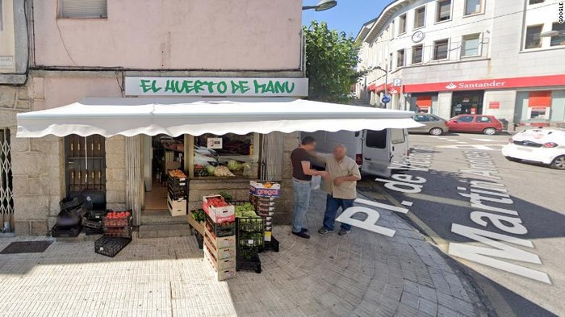

Mafia Italia Tertangkap Berkat Google Maps
Posted By: Prisma Aditya Januari 11, 2022

Seorang mafia Italia dilaporkan telah ditangkap oleh pihak kepolisian setempat berkat bantuan aplikasi Google Maps. Menurut seorang penyelidik di kepolisian, mafia ini berhasil ditangkap setelah buron selama hampir 20 tahun.

Kemudian setelah penyelidikan selama dua tahun, mafia bernama Gioacchino Gamino, 61 tahun, berhasil dilacak di wilayah Galapagar, Spanyol, di mana dia diketahui tinggal dengan nama palsu.
Penangkapan Gamino di wilayah kota yang dekat dengan ibu kota Madrid ini berawal dari tampilan jalan pada aplikasi peta Google Maps yang akhirnya menjadi petunjuk kunci dalam penyelidikan yang lebih dalam. Tampilan jalan atau Google Street View yang dapat diakses melalui Google Maps telah menangkap gambar dua pria sedang mengobrol di luar toko buah dan sayuran bernama El Huerto de Manu, atau Taman Manu, di Galapagar. Polisi meyakini bahwa salah satu pria itu sangat mirip dengan Gamino, namun identitasnya baru dikonfirmasi ketika mereka menemukan daftar restoran terdekat bernama La Cocina de Manu atau Manu's Kitchen. "Fotogram itu membantu kami mengonfirmasi penyelidikan yang kami kembangkan dengan cara tradisional," kata Nicola Altiero, wakil direktur unit polisi anti-mafia Italia (DIA). Toko dan restoran tersebut sekarang telah tutup, tetapi polisi menemukan foto Gamino mengenakan pakaian koki di halaman Facebook La Cocina de Manu. Dia berhasil dikenali oleh kepolisian dari bekas luka di sisi kiri dagunya. Gamino kemudian berhasil ditangkap pada 17 Desember lalu.
Gamino merupakan anggota kelompok mafia Sisilia yang dijuluki Stidda. Ia telah melarikan diri dari penjara Rebibbia Roma pada 2002 dan pada 2003 telah dijatuhi hukuman penjara seumur hidup atas pembunuhan yang dilakukan beberapa tahun sebelumnya. Dilansir dari Standard Media, Altiero mengatakan Gamino saat ini ditahan di Spanyol dan mereka berharap untuk membawanya kembali ke Italia pada akhir Februari. Lebih lanjut, rincian mengenai penangkapan Gamino dikonfirmasi oleh Jaksa Palermo Francesco Lo Vo yang memimpin penyelidikan. "Kami tidak menghabiskan hari-hari kami mengarungi Google Maps untuk menemukan buronan," katanya. "Ada banyak penyelidikan panjang sebelumnya, yang membawa kami ke Spanyol. Kami berada di jalur yang benar, dengan Google Maps yang membantu mengonfirmasi penyelidikan kami," tambahnya.